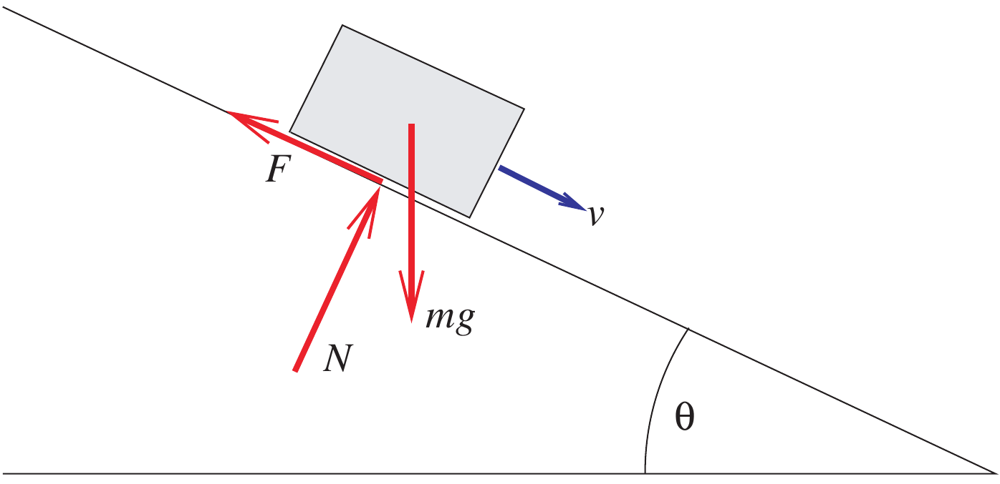
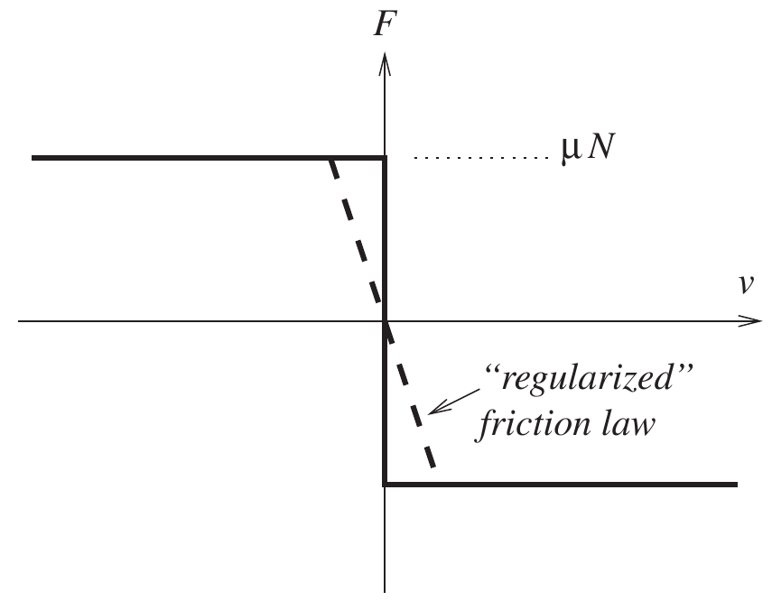
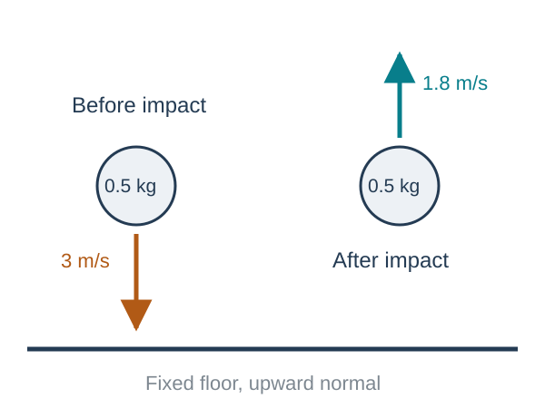
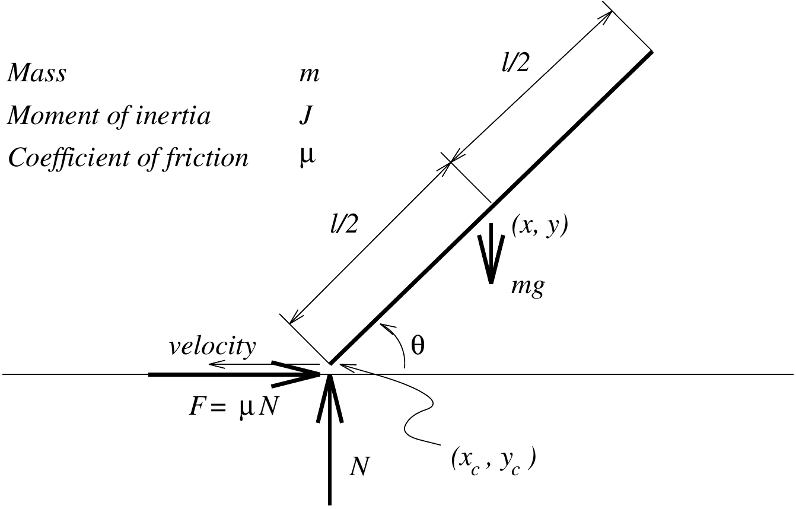
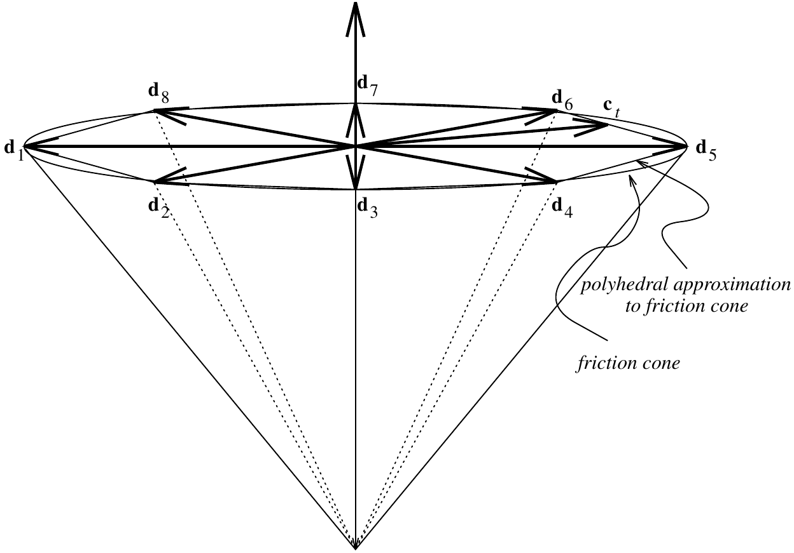

Rigid-Body Dynamics with Friction and Impact
Kinematics and Machine Dynamics · Chapter 11
Chapter overview
Friction and impact
- Sticking, sliding, and Coulomb friction.
- Contact impulses and restitution.
Advanced material
- Painlevé’s problem and complementarity.
- Measure differential inclusions.
- Continuous contact models and time-stepping methods.
Goal: distinguish smooth motion, sustained contact, and impact in a rigid-body model.
What a rigid contact model idealizes
Real bodies deform during contact. A rigid model replaces a short deformation event by an instantaneous change in velocity.
Position remains continuous through an impact:
q(t^+)=q(t^-),\qquad v(t^+)\ne v(t^-).
A finite velocity jump requires a finite impulse. A bounded force acting for zero time cannot produce it.
A separate impact law describes the unresolved deformation and energy loss.
The gap and the normal reaction
Let g(q) be a signed gap, positive when bodies are separated. Let N be a compressive normal force.
For nonadhesive rigid contact,
g(q)\geq0,\qquad N\geq0,\qquad g(q)N=0.
A positive gap means N=0. A positive normal reaction requires zero gap.
These conditions permit contact and separation while forbidding penetration and tensile contact forces.
Coulomb friction during sliding
Let v_t be the relative tangential velocity at a contact, with v_t\ne0.
\boxed{f_t=-\mu N\frac{v_t}{\|v_t\|}.}
Friction opposes relative sliding. Its power is
f_t\cdot v_t=-\mu N\|v_t\|\leq0.
The coefficient \mu is a model parameter for the contacting surfaces and operating conditions.
Static friction is a range of possible forces
When v_t=0, the friction force can take any value satisfying
\boxed{\|f_t\|\leq\mu N.}
The force balance determines which value is needed to maintain sticking.
At rest, setting friction to zero can predict motion where sticking should occur.
We use one coefficient \mu for the set-valued model. Engineering models may distinguish static and kinetic coefficients.
Worked example: a block on a ramp

Take positive v downhill. With no normal acceleration,
N=mg\cos\theta.
During downhill sliding,
\dot v=g(\sin\theta-\mu\cos\theta).
At rest, sticking is possible when
\boxed{\tan\theta\leq\mu.}
Ramp example: stopping and sticking
Let \theta=20^\circ, \mu=0.40, g=9.81 m/s², and initial downhill speed v_0=1 m/s.
\dot v=9.81(\sin20^\circ-0.4\cos20^\circ) \approx-0.3321\ \mathrm{m/s^2}.
t_{\mathrm{stop}}\approx3.011\ \mathrm s,\qquad s_{\mathrm{stop}}\approx1.505\ \mathrm m.
Since \tan20^\circ\approx0.364<0.40, static friction can hold the block after it stops. The sliding equation stops applying at v=0.
A set-valued friction law
In one tangential dimension, define
\operatorname{Sign}(v)=\begin{cases} \{1\},&v>0,\\[-2pt] [-1,1],&v=0,\\[-2pt] \{-1\},&v<0. \end{cases}
Then
\boxed{m\dot v\in F_t-\mu N\operatorname{Sign}(v).}
At v=0, this relation can select \dot v=0 whenever |F_t|\leq\mu N.
Smoothing changes the sticking behavior

A smooth approximation such as
f_t=-\mu N\tanh(v/\varepsilon)
can simplify an ODE implementation.
For a small nonzero applied load, its equilibrium generally requires a small nonzero velocity: creep.
A smaller \varepsilon sharpens the approximation but can make the ODE stiff.
The friction cone
For a unit normal n and tangential force f_t\perp n,
f_c=Nn+f_t,\qquad N\geq0,\qquad\|f_t\|\leq\mu N.
These admissible forces form the Coulomb friction cone.
- Sticking allows a tangential force inside the disk \|f_t\|\leq\mu N.
- Sliding selects its boundary opposite to the sliding velocity.
If contact opens, N=0 and the friction force is also zero.
Maximum dissipation
For a given normal force, choose the admissible friction force that dissipates the most power:
\boxed{f_t\in\underset{\|f\|\leq\mu N}{\arg\min}\ v_t^Tf.}
For v_t\ne0, the solution is the Coulomb sliding law.
For v_t=0, every admissible force has zero instantaneous power. The motion equations and sticking condition determine the needed reaction.
Other convex friction sets can represent anisotropic resistance.
Impulse and a velocity jump
Over a short collision, define contact impulse
P=\int f_c\,dt.
For a particle,
\boxed{m(v^+-v^-)=P.}
The superscripts - and + denote the limits just before and just after impact.
Impulse has units N·s. It determines the momentum jump without specifying a peak force or contact duration.
Newton’s normal restitution law
For a single closing contact, take v_n^-<0 and a separating normal as positive.
\boxed{v_n^+=-e\,v_n^-,\qquad0\leq e\leq1.}
- e=0: no normal rebound.
- e=1: ideal elastic rebound in this isolated normal mode.
- Intermediate e: partial rebound.
The velocities are relative contact velocities. Apply this law at an impact, not to a separated body.
Worked example: normal impact on a floor

A 0.5 kg particle hits a fixed floor with v_n^-=-3 m/s and e=0.6.
v_n^+=1.8\ \mathrm{m/s}, P_n=m(v_n^+-v_n^-)=\boxed{2.4\ \mathrm{N\,s}}.
T^- =2.25\ \mathrm J,\quad T^+=0.81\ \mathrm J.
The kinetic-energy loss is 1.44 J.
Poisson’s compression and restitution phases
Poisson’s model separates the normal impulse into compression and restitution parts.
Using positive impulse magnitudes,
P_n^{\mathrm{rest}}=e_P P_n^{\mathrm{comp}}.
Compression removes the approaching normal velocity. Restitution supplies a further impulse as stored deformation energy is released.
For a single frictionless particle impact, the Newton and Poisson laws agree when e_P=e. Frictional and coupled impacts require more care.
What the coefficient of restitution leaves out
Restitution can depend on configuration, contact conditions, and energy stored in elastic vibrations.
A single material constant may not describe a slender bar striking at different angles or undergoing repeated impacts.
With friction or multiple simultaneous contacts, independently imposing pairwise restitution laws can give inconsistent or energy-increasing results.
The impact model must be checked together with momentum balance and energy, rather than assuming 0\leq e\leq1 settles every case.
The remaining material is advanced
The rest of this chapter goes beyond the usual undergraduate treatment of friction and impact.
It introduces complementarity problems, measure differential inclusions, and numerical contact methods.
The aim is to understand what the models represent and how a simulation step is constructed. Existence and convergence proofs require additional background in convex analysis and measure theory.
The preceding material on friction, impulse, and restitution provides the physical foundation.
Painlevé’s problem: a sliding rod

The angle \theta is measured from the horizontal. The rod has length l, mass m, and central inertia J.
During leftward sliding, F=\mu N points right.
m\ddot x=\mu N,\qquad m\ddot y=N-mg, J\ddot\theta=\frac l2(\mu\sin\theta-\cos\theta)N.
The contact-point acceleration
For the illustrated angle convention,
g=y_c=y-\frac l2\sin\theta.
Differentiating twice and substituting the rod equations gives
\boxed{\ddot g=A(\theta)N+b(\theta,\dot\theta),}
A=\frac1m-\frac{l^2}{4J}\cos\theta(\mu\sin\theta-\cos\theta), b=\frac l2\sin\theta\,\dot\theta^2-g_0.
Here g_0 is gravitational acceleration.
A sliding mode can fail to have a solution
At a closed contact with zero normal velocity, admissible smooth motion requires
0\leq\ddot g\ \perp\ N\geq0.
If A<0 and b<0, then AN+b<0 for every N\geq0.
For a uniform rod with m=1 kg, l=1 m, J=1/12 kg·m², \mu=2, \theta=45^\circ, and \dot\theta=0,
A=-0.5\ \mathrm{kg^{-1}},\qquad b=-9.81\ \mathrm{m/s^2}.
No nonnegative normal force sustains this assumed sliding mode.
Why an impulse can change the conclusion
The contradiction assumes bounded forces and continued sliding with F=\mu N.
An impulse can change the tangential velocity to zero, after which the friction relation permits sticking or another contact mode.
Thus a formulation based only on smooth force balances can miss admissible behavior, even without an incoming normal collision.
This motivates a model that admits both ordinary contact forces and impulses. It does not by itself establish uniqueness of the resulting motion.
Complementarity notation
For vectors z,w,
\boxed{0\leq z\ \perp\ w\geq0}
means z_i\geq0, w_i\geq0, and z_iw_i=0 for every component.
A positive gap forces zero reaction, and a positive reaction forces zero gap. Both may be zero.
At closed, nonimpacting contact with zero normal velocity, the acceleration-level version selects lift-off or sustained contact.
Linear complementarity problems
An LCP asks for
\boxed{0\leq z\ \perp\ Wz+b\geq0.}
The map is affine, but deciding which components are zero is nonlinear.
For the scalar problem w=2z-6, the solution is z=3, w=0.
For w=-z-1, no z\geq0 can make w\geq0.
An arbitrary LCP need not have a solution.
Complementarity and constrained optimization
For \min_x f(x) subject to g_i(x)\geq0, the KKT conditions are
\nabla f(x)-\sum_i\lambda_i\nabla g_i(x)=0, \boxed{0\leq\lambda\ \perp\ g(x)\geq0.}
An inactive constraint has zero multiplier. An active constraint can carry a reaction.
Under a suitable constraint qualification, these are necessary at a local optimum. For a convex problem, they are also sufficient under the usual assumptions.
Contact geometry in generalized coordinates
Use independent local coordinates q with v=\dot q and gap g(q).
J_n=\frac{\partial g}{\partial q},\qquad v_n=J_nv,\qquad v_t=J_tv.
The associated generalized contact forces are
\boxed{Q_c=J_n^TN+J_t^Tf_t.}
The transpose mapping follows from power: Q_c^Tv=Nv_n+f_t^Tv_t.
J_n^T is a generalized direction. It need not be a unit vector in coordinate space.
Lagrange’s equations before contact
With v=\dot q, the Lagrangian is
L(q,v)=\frac12v^TM(q)v-V(q).
For generalized external force Q_{\mathrm{ext}},
\boxed{\frac{d}{dt}\frac{\partial L}{\partial v}-\frac{\partial L}{\partial q}=Q_{\mathrm{ext}}.}
Expanding the derivatives gives
M(q)\dot v+C(q,v)v+\nabla V(q)=Q_{\mathrm{ext}}.
The velocity-quadratic term arises from the configuration dependence of M.
Smooth motion with contact forces
Between impacts,
\boxed{M(q)\dot v=f(q,v,t)+J_n^TN+J_t^Tf_t,\qquad\dot q=v.}
Here f=Q_{\mathrm{ext}}-C(q,v)v-\nabla V(q) collects the noncontact terms.
Combine this with the gap condition and the Coulomb friction relation.
This equation describes smooth phases, but an ordinary derivative \dot v cannot represent a jump by itself.
A velocity of bounded variation
A velocity history has bounded variation on [0,T] if
\operatorname{Var}(v)=\sup_{\{t_i\}}\sum_i\|v(t_{i+1})-v(t_i)\|<\infty.
It may include jumps as well as smooth changes. Its distributional derivative Dv is a measure.
For a piecewise smooth trajectory,
Dv=\dot v\,dt+\sum_k(v_k^+-v_k^-)\delta_{t_k}.
The atoms \delta_{t_k} represent changes concentrated at impact times.
Momentum balance as a measure equation
Replace instantaneous contact forces by impulse measures dP_n,dP_t:
\boxed{M(q)\,Dv=f\,dt+J_n^T\,dP_n+J_t^T\,dP_t.}
On a smooth interval, dP_n=N\,dt and dP_t=f_t\,dt.
At an isolated impact, integrating across its atom gives
M(q)(v^+-v^-)=J_n^TP_n+J_t^TP_t.
The same momentum balance can therefore describe forces and impulses.
Complementarity between a gap and a measure
The measure form of nonadhesive contact is
g(q(t))\geq0,\qquad dP_n\geq0,\qquad \boxed{\int_0^Tg(q(t))\,dP_n(t)=0.}
The normal impulse measure can act only where the gap is zero.
This relation controls where contact acts. A restitution law is still needed to determine the normal velocity jump.
In particular, a body can touch and immediately separate with no continuing normal force.
Measures and friction bounds
For isotropic tangential friction, the force bound extends to measures as
\boxed{|dP_t|\leq\mu\,dP_n.}
Here |dP_t| denotes the total-variation measure.
Equivalently, dP_t has a density \eta=dP_t/dP_n satisfying \|\eta\|\leq\mu almost everywhere with respect to dP_n.
At an isolated impulse, this reduces to \|P_t\|\leq\mu P_n.
Measure differential inclusions
A set-valued acceleration law \dot v\in F(q,v,t) extends to a measure law by separating
Dv=a\,dt+d\nu_s.
The ordinary part satisfies a\in F almost everywhere in time. The singular part must point along admissible unbounded directions of the set.
For a nonempty closed convex set K, its recession cone is
K^\infty=\{d:x+sd\in K\text{ for every }x\in K,\ s\geq0\}.
Impulse directions belong to the corresponding recession cone, together with the contact and impact conditions.
A complete single-contact model needs several laws
The model combines:
- Kinematics \dot q=v and measure momentum balance.
- Nonpenetration and normal-contact complementarity.
- An admissible friction set and a dissipation rule.
- An impact law at closing contacts.
- Consistent initial position and velocity.
These relations solve for the motion and contact impulses together. Momentum balance alone does not select the collision outcome.
Choosing a numerical contact model
| Approach | Main consequence |
|---|---|
| Enumerate smooth contact modes | Many cases and possible Painlevé failures |
| Force-level complementarity | Selects active contacts but still assumes bounded forces |
| Compliant penalty model | Resolves deformation approximately, often with stiff dynamics |
| Impulse time stepping | Solves integrated contact effects over each time step |
The following method uses contact impulses as the step unknowns.
One impulse-based time step
Freeze M,J_n,J_t at q_k, and compute the free velocity
v_{\mathrm{free}}=v_k+hM^{-1}f_k.
For impulse unknowns P_n,P_t,
\boxed{v_{k+1}=v_{\mathrm{free}}+M^{-1}(J_n^TP_n+J_t^TP_t),} q_{k+1}=q_k+h v_{k+1}.
The contact solve determines the impulses. P/h is a step-average force, which need not approach a finite peak during an impact.
Normal impulse complementarity
For a candidate contact, let v_n^-=J_nv_k.
A velocity-level restitution condition is
\boxed{0\leq P_n\ \perp\ J_nv_{k+1}+e v_n^-\geq0.}
With P_n>0, the equality gives Newton restitution. With P_n=0, the step permits separation.
A contact search must first identify closed or imminently closing contacts. Applying this condition to distant bodies would generate premature impulses.
Worked example: an inelastic contact step
For a 2 kg particle hitting a fixed floor, use e=0, v_n^-=-3 m/s, v_t^-=1 m/s, and \mu=0.20.
Normal balance gives P_n=6 N·s and v_n^+=0.
Stopping tangential motion would require P_t=-2 N·s, but the friction bound permits only |P_t|\leq1.2 N·s.
Thus
\boxed{P_t=-1.2\ \mathrm{N\,s},\qquad v_t^+=1-1.2/2=0.4\ \mathrm{m/s}.}
The particle continues sliding. Kinetic energy falls from 10 J to 0.16 J.
Polyhedral approximation of the friction cone

Choose unit tangent directions d_i in positive–negative pairs and set D=[d_1\ \cdots\ d_s].
P_t=D\beta,\qquad\beta\geq0, \mathbf1^T\beta\leq\mu P_n.
More directions improve the approximation to the circular friction disk, at the cost of more unknowns.
Friction selection as complementarity
For the polyhedral cone, introduce a multiplier \lambda\geq0 for its total tangential budget.
\boxed{0\leq\beta\ \perp\ D^TJ_tv_{k+1}+\lambda\mathbf1\geq0,} \boxed{0\leq\lambda\ \perp\ \mu P_n-\mathbf1^T\beta\geq0.}
A used direction has zero reduced cost. If the friction budget is inactive, \lambda=0.
Together with momentum balance, these relations enforce the discrete maximum-dissipation law using the post-step velocity.
The contact-space matrix
Define G_n=J_n^T and G_t=J_t^TD. Then
v_{k+1}=v_{\mathrm{free}}+M^{-1}(G_nP_n+G_t\beta).
The matrix
W=\begin{bmatrix}G_n^T\\G_t^T\end{bmatrix} M^{-1}\begin{bmatrix}G_n&G_t\end{bmatrix}
maps contact impulses to changes in contact velocities.
With positive-definite M, W is symmetric positive semidefinite. Contact redundancy can make it singular.
The inelastic step as an LCP
For e=0, collect z=(P_n,\beta,\lambda) and solve 0\leq z\perp Az+b\geq0, where
A=\begin{bmatrix} G_n^TM^{-1}G_n&G_n^TM^{-1}G_t&0\\ G_t^TM^{-1}G_n&G_t^TM^{-1}G_t&\mathbf1\\ \mu&-\mathbf1^T&0 \end{bmatrix},
b=\begin{bmatrix}G_n^Tv_{\mathrm{free}}\\G_t^Tv_{\mathrm{free}}\\0\end{bmatrix}.
This freezes the geometry and mass matrix during the step.
What the LCP solver guarantees
Pivoting algorithms such as Lemke’s method search for a complementary solution.
For this single-contact matrix and z\geq0,
z^TAz=(G_nP_n+G_t\beta)^TM^{-1}(G_nP_n+G_t\beta) +\mu P_n\lambda\geq0.
Thus A is copositive. Existence and algorithmic guarantees also require hypotheses on the contact geometry and right-hand side.
A solver’s termination should be checked with residuals, feasibility, and complementarity products.
Using the exact friction disk
With physical tangential impulse P_t, retain \|P_t\|\leq\mu P_n directly.
The optimality conditions become
\boxed{0\in J_tv_{k+1}+\lambda\,\partial\|P_t\|,} \boxed{0\leq\lambda\ \perp\ \mu P_n-\|P_t\|\geq0.}
For P_t\ne0, \partial\|P_t\|=\{P_t/\|P_t\|\}. At zero it is the unit disk.
The smooth cone removes the directional approximation but yields a nonlinear, nonsmooth contact solve.
Position drift and restitution
A velocity-level contact condition does not exactly enforce g(q_{k+1})\geq0 for a finite time step.
Monitor the gap and use an appropriate correction or smaller step when penetration accumulates.
Replacing the impact condition by position complementarity alone can change the effective rebound, depending on when impact occurs inside the step.
Position projection should be documented and checked for its effect on constraints and energy.
Time-step accuracy and validation
The presented Euler-type scheme is first order on smooth segments. Impacts and active-set changes require separate convergence checks.
For each step, inspect:
- Momentum-balance residuals and negative gaps.
- Nonnegative normal impulses and friction-cone bounds.
- Complementarity products and energy behavior.
- Sensitivity to step size and friction-cone resolution.
Compare with an analytic case such as free flight, a resting block, or a single normal impact before simulating a mechanism.
From a rigid-body model to a simulation
Mass properties determine M(q). Kinematics determines contact gaps and Jacobians. Force models determine the smooth loading.
Contact and impact laws supply the additional conditions needed when motion reaches a boundary.
A simulation predicts the behavior of this combined model. Accurate integration cannot repair an unsuitable friction or restitution law.
The next part of the course returns to mechanism components: gears and cams.
References and next part
Primary: Aykut C. Satici, Kinematics and Machine Dynamics, Fall 2020 compiled notes, Chapter 11, pp. 69–86.
Underlying reference: David E. Stewart, “Rigid-Body Dynamics with Friction and Impact”, SIAM Review 42(1), 3–39 (2000).
The advanced material follows the compiled chapter. Worked examples, notation clarifications, and corrected derivations are identified in the speaker notes.

← Course Home · Kinematics and Machine Dynamics · Chapter 11